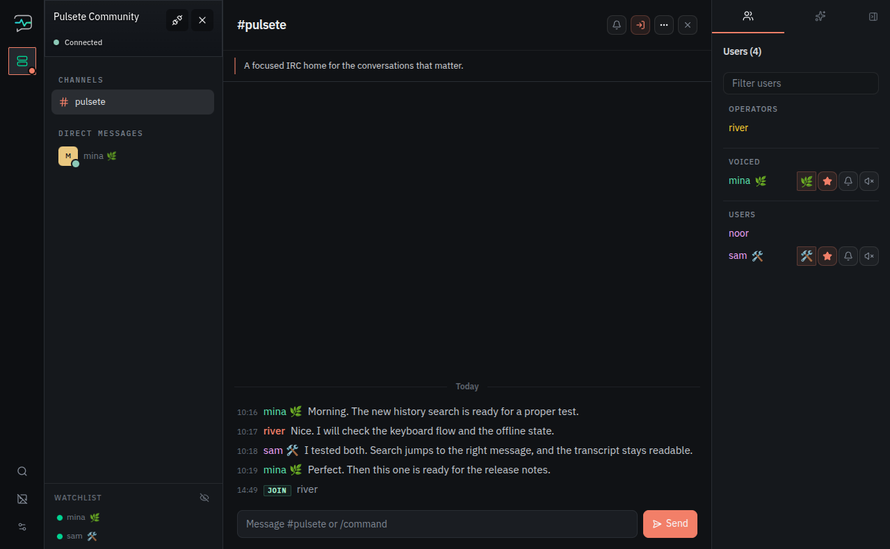

History stays local
Stored channel and private-message transcripts remain on your machine.
Pulsete keeps your IRC workspace and conversation history on your machine, ready through disconnects, reconnects, and restarts.
Ubuntu 24.04 amd64 MIT licensed

Networks can disconnect. Pulsete keeps saved networks, open conversations, notes, unread state, and local history available in the desktop app.
Stored channel and private-message transcripts remain on your machine.
Read saved conversations and move through the workspace while a network is offline.
Saved networks, open buffers, notes, watched nicks, and muted nicks return with the app.
Pulsete {{VERSION}}
Download the current .deb. Installing it also adds the
Pulsete APT source, so later releases are available through Ubuntu's normal update flow.
$ curl -LO https://github.com/enriquemorenotent/pulsete/releases/download/v{{VERSION}}/pulsete_{{VERSION}}_amd64.deb
$ sudo apt install ./pulsete_{{VERSION}}_amd64.deb